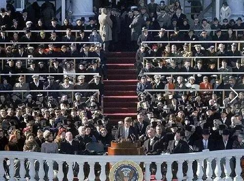

讲课内容----在一家合作的货代哪里的讲课内容（节选）
去讲课前，有人说：”可不拿自己当外人 人家那个不比你知道的多。人家给你八年出一票货物 还要给你捧场 故意给你个面子叫你去讲课，你还当真了。”
我回答：（就怕认真二字 出口进口都做，票票和货代合作 今天的谈话我认为可以给诸位带来一些启发，）
态度问题： 焦首朝朝还暮暮 煎心日日复年年 星临万户动 月傍九霄多
不是你进入一家大型体面的公司你很骄傲，而是公司因为拥有你而感觉到骄傲
天天感觉自己货代做的不错，怎么没有单子，怎么客人做几次就不做了，谁都没得罪，为啥和我合作的客户稳定的不多，大单子不多。
货代窗口找来：
你都是 蒋总有啥货物吗？ 怎么给你帮忙报价。
人家都是 啥名字来自啥公司 优势航线是啥，然后把自己优势航线的价格报出来 很多行价格，最后看到一个其中有一个是大连到迪拜， 这个不是 我上周走的吗上次我走的价格是600，人家现在给的是400。 兴趣立刻来了，立刻联系，而且不就成单子。 你和人家的水平，高下立见。人家事半功倍。
人家又来电话了说：最近老是撞船，我这个电话也许多余，但是建议您一定买保险。（ 全部考虑发货人权益）。 你从来电话我都是问问，有货没有 啥时候能给你走一票，你完不成销售任务了（ 全部想着你自己发财）
8.
一些体会： 以上的情况 到底该如何去理解， 如何找到解决的办法，
a ）人人都有自己不会的地方， 但是都不会明说这个地方我不会或者是那个地方我不行，我不如你 。你的谈话能否带有提示解释的性质，能否带有成型的方案共别人挑选，这样成功更高（ 比如， 出口商不知道啥是14天自由港时间/也就是免用箱时间 你赶紧打电话给出口商 告诉他去印度的经常需要14天自由港时间，出口商也许是第一次出口，但是这个时候他不一定好意思问你为啥，怕你说他出口啥都不懂。你就应该接着说，因为印度人办事效率低，港口建设破破烂烂、清关缓慢，一旦超过7天的天然免用箱时间，就会产生费用，而且费用与日俱增，后期加倍。给客人在目的港口增加不必要的成本费用。如果现在订舱时候申请了，一分钱不要、而且客人也可以在目的港从容清关， 无论这话你说了，出口商申请与否，代表你做这个事情了。这样你作为货代，这个电话是让人鼓舞的，也是让你自己高兴的。
最傻的就是你这样的傻逼，以为发货商没有提出来，反正自己的猪脑子也想不起来，干脆得过且过，干脆不提也不问。你不知道，要是你电话提到这个事情，出口商：第一：会认为你专业，知识丰富啥都知道，而且操作的单子无数，在你手里走他放心。第二会认为你体贴细致，什么注意事项都不要出口商自己想 你都能想的到，而且会及时告诉他，不会给坏事情 第三会认为你真的是自己人就是他要找的知冷知热的货代。能和你合作他除了希望事情办完后立刻支付前给你来表达对你的谢意和对你的忠诚，还会十分尊重你 因为尊重你就是给他自己造福，信任你就是和得到金钱划等号。
然而你这样的傻逼之人、居然破天荒的认为人家都没提14天以自由港，你提出来，万一出口商想申请，你还要找他盖章签字还要找船公司，而且做完这些事、你还是全程免费，你一分钱也不能多收，干了也白干。 你为你知道或者忘却这个事情，以至于不去办理，而陶醉的，胜利的，喜悦的，或者相反的表情，盲目的，毫无知觉的、呆头呆脑的，走路都不能成直线。以为世界上钱真好赚，一切你都钯里纂。 结果，货物到港，出口商清关延迟，港口罚款。客人清关的货代告诉客人，可以在发货港口申请14或者21天免用箱，但是你在订舱时候没有申请，现在申请不了啦，船公司推脱不给申请了，你也傻眼没辙了。无端给客人增加费用，下次只要有人申请了14天自由港时间，客人不但你这家货代不用了， 连这家出口商都不采购了， 就为这事情是丢失客户，大家都输了。 痛心疾首。而且事情往往是出现这个坏的结果。本来可以继续的业务，最后没有了。
B） 和别人打交道，特别是商业行为，一定要记住至高无上的法宝，那就是处处示弱，这个很好理解。比如一家货代，怎么说他，他都服服帖帖，给他讨价还价，无论便宜多少，这家货代你都能便宜一些，哪怕是100元。 另一家货代，总是牛皮哄哄，岑头咧怪，而且完全是靠扣提单强行去开账单，强迫支付，两家货代就在你面前，你要出货了， 老板问你选择谁？ 你肯定选择第一家，你会给老板说，第一家货代我叫他干啥他干啥，从来不敢反样，容易控制，而且忠心耿耿。
我做国外的业务，国外客人看不见我、摸不着我，我全靠完成客人交给我的任务，对客户服服帖帖，踏踏实实，不搞阴谋诡计， 对复杂单据单证，突发认证等跑断腿也帮助客人办理好，才得到客人的信任和才一直做客人的单子的。靠的就是处处示弱，给客人一种完全可以控制住我的感觉，给客人一种我在他面前从来不敢忤逆他，不敢欺骗他，更不敢给他瞎报价的一种可靠的感觉。你也许和我有一样的感觉 只是你没有像我一样总结出来，但是你在实际使用这个办法的时候，却老是力不从心，这是为啥，因为我是用心来办事，臣服于客人商业交往的真理，你是用计策来办事，你服务于你的利润多少来决定你软弱的程度，当利润不是暴利的时候，你的耐心就消失， 更不要提你能服务了。商业的本质是控制，你的客户能够控制住你，他就会选择继续和你打交道，一旦他感觉到控制不住你，无论你价格再好，他也不敢和你做。
C） 主动汇报制度，这个很重要，绝对不能轻视。想挣别人的钱，就要把事情给人家说的清清楚楚、明明白白。一本糊涂账，或者漫不经心、都自我毁灭。啥叫主动汇报，不就是人家找你走货，但是人家又想知道、出口货物的流程到哪一步了， 问你，又不一定能找到合适的时间，比如刚想到问你，发现时间是晚上半夜12点，怎么去问你，白天上班人家出口商有可能在接待客户，没来得及问你。不问你、不代表货主不关心。如果你能主动QQ/微信留言，告知事情进行到哪一步了。说的尽量详细一些，特别是需要提前叫货主准备的资料，或者是你不能理解的货主资料的文字说明啥的， 都要表达清楚， 把当天下来的或者你手里到这一时刻为止，下来的单据， 特别是整套报关资料齐备与否，船公司提单，确认单，邮箱要求，保函等单据 和海关的查验单，报关单核对文本和正本，放行通知书，目的港代理等等，都能够立刻给到相应的货主手里，货主从心里自然服你，这也是你证明你收钱你办事的最好的材料，或者是亲自打电话货主，主动汇报一切相关信息，并从你的这些汇报里面留意货主的人生观、价值观、个人修养、专业知识、个人素质，以及他产品的特性和他本人的处境等等，这是多好的你和货主沟通的场合和机会，你以对公业务为主要内容，不断挖掘货主的出口地区，出口数量，出口习惯、和常用货代你都能套出来，这样不比你单独打电话叫人家告诉你，人家经常出口啥地方，有多少数量，更容易得到真实消息吗？本来是你的权限，你是完全不利用，非要默不则声，处处等着人家来找你，花钱找你服务，还要老是在你屁股后面找着你， 你不嫌烦、但是人家觉得无趣。鬼才找你做下次单子呢。 （ 当然有的货主不喜欢货代打扰。 你就少啰嗦，一般不出事， 可以不联系，但是我认为谁都会关心自己的货物，你联系了，对你的货代服务还是有帮助的。）
d） 这是最重要的， 那就是增加预见性 防患于未然 凡是预则立不预则废。把前面道路上可能出现的风险和问题，都最大限度的预料到，然后告诉相关的当事人。 叫当事人提前采取措施，就是到时候问题真的出现了，当事人回忆出来你曾经预料到和提醒过他，虽然他悔不当初，但是也会从心底感谢你的。出口商即便是自己吃亏了， 也不会影响下次和你合作的。 比如：这里就举几个例子。先从基础的单据说起，完全可以规避的单据问题的错误， 因为下面我还会提到进口的事例： （进口里面的清关时候的单据细节， 比如，国外提供的FTA/优惠关税证书上面的总数量即净重和毛重和国外的提单发票合同上面的总数量即净重和毛重有出入的情况；国外提供的FTA/优惠关税证书上面打印过细，导致FTA分两个独立的证书，造成在中国海关清关需要分两票清关的情况；国外预先或者合同上面不能显示合同号发票号等信息造成国内清关单据在这个上面出错的情况，或者是国内海关清关时候要求的货物的申报要素和货物的材质的详细说明；国外单据不能及时提供全部正本纸质盖章签字版本的单据情况；提单，FTA等需要国外确认和提供的，但是上面有错误需要更改，国外却搪塞或者迟迟不能更改的情况，等等）
）因为不同的船公司，直达和转船也不一样，报价海运费的时候要告诉我们， 海运到达目的港的天数，和船名航次的情况都要说清楚。这样你的价格高，也许是这家船公司价格就高， 你都列出来，人家看到才舒服。
）报关的预录单和提单的草单件要及时发给我们，和我们确认报关单和提单的全部预录信息后，货代再提交给海关和船公司，这样可以有效减少错误，和使得工作效率提高，单据顺利。每次货代不能主动给，都要去问她要。就不是好货代了。主动提交单据是职责，不是老要找你要。
）拖车、报关、港杂、海运等费用，海运费我们也折合人民币支付。 报价海运费的时候，要把人民币汇率也告诉我们。（当然最好是按照实时汇率结算。这样清清楚楚。如果不行，只接受比实时汇率多0.1美元的高价汇率。比如：实时汇率是6.3，我们可以按照6.4的汇率支付。如果高于这个汇率区间标准，请提前告知。我司将直接支付美元给贵司美元账户来规避超高汇率）
还有，支付全部费用的时候，如果是不开票的价格能便宜吗， 便宜多少？ 也请告知。谢谢---这些和钱有关， 你既然收钱，为啥不把这些和钱有关的挂在嘴上提前说出来，那你不能干，你要能干，你该是好货代了，说你不行你不服，看你做事又看不惯， 鬼才找你走货。
6.）请货代报价和实际行情一致， 不要乱报价。因为乱报价或者报高价，我们将被迫考虑走别家出货，或者和客人直接转做FOB条款，由客户的货代来操作。以便客户控制成本支出。
7.） 有时候极个别的情况下，因为客人要求或者是提单确认疏忽，提单的收发货人或者品名等信息，有时也许会有一项不能符合客人L/C信用证的要求或者是客人的要求。个别极端情况下需要改单，所以如果是两家或者多家船公司在价格服务和船期一样的情况下，货代优先选择较容易改单的船公司来订舱，（当然更改正本海单要支付改单费，这个我们知道的），这样可以完善提单。（订舱的时候你考虑过这个问题吗？伊朗国航改单费1800RMB 长荣 600 。COSCO 300元。差异很大的？ 你报价时候也许伊朗国航便宜，但是万一改单，总成本就高了，你连知道这事情都不知道，还怎么谈你能服务好呢？）
8.） 按照惯例，我司付款费用的时间，应该是在看到货代发给我们的正本提单扫描件后，立刻支付。（ 这是因为只有船公司把正本提单开出来后，船公司那边的费用才基本能最后确认），货代应切忌，没有提单扫描件就急匆匆、急不可耐的发费用清单或者是直接发一个总费用来找我们付款，这是不负责任的表现、也是玩忽职守的表现。我们这里敬告货代，服务做好，钱自然会及时来到，就是因为担心你办不好事，干不好活， 才不敢提前付款的。提单扫描件不是正本提单，在你没有风险的情况向，仍然想着怎样提前收款。下票货物还会找你做吗？总是忽悠自己， 迷惑自己。你能接到单子吗？做一票，跑一票，你不感觉到累吗？
9.） 还有的货代， 装柜后或者是看到正本提单扫描件后一周到10天左右，仍然找货代要不到提单正本，也不知道是怎么操作的，常见的解释是： 船公司因为美元海运费没有到账，不给释放提单。但是我们都是在看到提单扫描件立刻支付费用的。存在这样提单超晚提供提单的货代，要提前预防，不能长期保持这样的作风。（ 近洋航运 1-2周内到对放港口 客人习惯要正本提单，你这个晚给提单的服务是不行的，换掉你 你有啥话说吗？）
10）我司询价票票是真实的出口单子，如果您的报价发给我们。我们没有反馈或者是回馈不理想，唯一的说明就是贵司价格和我们正在操作的货代的价格还有差距，暂时不能合作。 我们会在别的点继续发送托书给贵司的，要是 我们连续发送3至5票托书，依然没有和贵司合作，无论贵司优势再大，力量再强， 都说明我司和贵司合作不能达到预期的标准。您要是问原因， 那是很简单的，比如：拖车这个事情，以安徽合肥到芜湖港为例子：解放前或者改革开放前后，道路交通和今天2018年的道路交通是有很大改善的，扣除通胀因素，肯定是现在的运输方式更为便捷廉价，而您的报价运输上面几乎是100年没有调整，请问你的报价符合科技改变生活吗，科技大幅度的降低了一切成本， 运输成本的总体下降趋势是客观的，您还把真假李逵拿刀短路的那一套用在当今信息十分发达的实际货物出口上面，这样自欺欺人，找你不是害我们自己吗？海关再坏， 也有降税费的项目，所有国家降税费的项目您都留在手里，却把清单列给我们，找你走这票货实质就是事实上证明我们是白痴，我们会自我承认是白痴吗？
11）还有的货代，只要一提他的价格高，他就问你现在拿到的价格是多少？只要我们告诉他现在拿到的价格，他立刻会说他也能做。我在别处啥都不说就立刻拿到这个价格，找你走还要和你讨价还价才能拿到这个价格，我还非要找你走，这不是睁着眼忽悠人吗？------ 我是最反感这种货代的，啥都能做，结果是个大忽悠，坑蒙拐骗，全部披着货代的外衣来招摇过市，过街老鼠人人喊打，不做外贸也不找你走货，你能做，为啥早不报这个价格！！！其实原因很简单，按照别人的价格做他做，他会利润低，是他绝对不能服务的，他所谓的能做是他自己能做，仅仅是他在这个价格上面做，他会很失落。他更不知道，没有第一次的低价，怎么有机会去开拓一条客户的航线，通过第一次出现的问题，第二次优化以后，就会赚钱。每次都要赚大钱， 这就是他的信条。蒋总也没有这个本事给你挣大钱，蒋总和你不打交道，撤出为妙。
12）一个例子：一个货代我找他报价， 连续几次都高，结果我找的是另一家货代做的，他立刻来找我说，有家货代找他做2*40HQ和我的点一样的。他自己做价格高，别的货代找他做价格倒低。 这个货代你说怎么找他做？
携泰山一越北海 非不为也 而不能也 为老人而折枝 非不能也 而不为也
因为找你出口的人，很多是知识文化程度不高，或者知识水平高、但是不是国际贸易专业的，自己流程也不懂， 特别是海关和船公司，极端特殊 ，垄断、腐败丛生，还有船公司不直接接受直接客户/终端客户的订舱，需要找委托的订舱窗口来做。大家都怕，所以找个货代公司来操作。 这也是全国货代满天飞的原因，大家做货代老是有利可图，主要就是海关船公司少数接触，货代有机可乘有利可图， 但是如果不能就此深化自己，放任自己油头滑脑 自我欺骗。也是不能长久的。 货代得到的各方面的消息，本来就是货代可以自己把单据单证大包大揽，像一达通一样全部生吞活吃 大肆做单 。一达通、海管家等已经在给货代断后路了，在不能明白自己必须越权越界去服务，将会被淘汰。（ 外运对安徽国风的包揽单据的做法，使得国风对他的依赖很大，也减轻工厂业务员的负担，值得货代学习）
怎么来服务出口或者进口的人，都靠自己想，自己凭空是想不出来的， 主要还是总结前面单子的流程的经验教训，迅速改正。并能够指点别人。
比如： 你去东北 搞出个局面出来？（蒋介石见到东北最好行政长官卫立煌就说这句话，不就是 抵抗苏联 消灭工厂党 日本投降过了，把东北牢牢掌握在国民党手里） 没说怎么弄 就知道所有的你都要弄好！ 你把合肥把环世的团队给拉起来，就这一句话 你要付出全部的细节努力，而且结果还是成功和失败都存在。
那就没有好的货代吗， 当然有。
天津到玻利维亚 ， 天津外运 订舱后箱子没有， 立刻 推荐我们找他们的 代理下家 环渤海物流链公司做的， 做的很好，服务 拖车报关海运没叫我们操心 而且每个步骤都会给我汇报 真好 （要是小货代，一定霸着单子做困兽之斗，非要做这个单子给我损失交期为代价/或者高价海运费）这样的货代能够站在发货商角度，见钱眼不开，难能可贵我们会一直记着他，只要有机会 单子非他莫属。
汕头外运 开始我找他们网站第一次走货， 业务员接我电话 很不耐烦 并询问我的货物情况 大概意思就是你走货要老老实实 不能违规 还说到 他本事是直来直去不绕弯子，又提出联络方式是邮箱联系 他财务和操作都会抄送，我一一答应。 结果是我发送他们公司的托书格式我自己的托书格式，拖柜联络地址 货物图片等信息，然后在上面把委托方要求，提单确认，付款方等都说的清楚了，发送后 他们按图索骥 完成的很顺利，也没有像我邀功夸自己办事得力 不负希望。附件给我了一张支付清单，我立刻恢复感谢他做出的一切是的出口顺利 叫他开发票给我扫描件我付款，他下午开来发票，我收到后立刻就支付了，这样他们3-4天邮寄提单给我。 这样的办法一直都到第三个柜子，他找来了，很高兴的告诉我 说我虽然是他们的新客户，但是我做事条分缕析 高效快捷 从不啰嗦。他们同事几个人在中午吃饭的时候，一起说到我，说我很特别，给货代一个清新的感觉。尽管是他们的新客户，但是他们对我印象很好。他为我做的就是规避我美元汇率高的，给我折合RMB做海运价格，汕头-蛇口-巴生-陈乃 ，汕头-香港-巴生-陈乃 ， 说到香港的地理位置 中转的装卸费高， 叫我多出钱 他心里不是滋味 ，自动和自觉的围着我们的利益服务。难能可贵。这里有我打印的他们的情况， 你们参考。（ 见附件页面）
和这样的货代和人合作，犹如沐浴春风，别开生面。 我们自己也可以学到更多，而且是双赢的结果。 钱还支付的少。 事情还很少有办不成的时候。
而不是和你一起合作，总是花钱花的不明不白。心里窝窝囊囊。钱也不少支付，甚至多数是更多的支付。心里还老担心。鬼才这样老是去补贴你，任你折腾。
9. 如果你认为出口的事情 还不充分，那么我们接着说 进口的事情 ：
我做的进口的代理， 上海MS 价格高的离谱 比如报关费800元每个报关单 两份FTA 就是800*2 ， 数量在.64 和.63里面不一致，分别2000元、总4000搞定费。 无发票。 报关行，自己家的双A的不用，他找外面的报关行来清关我们的柜子，这样费用高， 船公司那边也要不来优惠，全程高风险、高担心、高价格做。 最后预付的钱和实际发票剩余的、找他退钱，他说完全可以压着钱不退， 吃进去不能吐， 但是他是好人、想长远合作， 可以给我们退还 。完全是恩赐，完全是不知道天高地厚，本来就是自己恬不知耻的去黑人家的预付款来逃避自己的应该面对的连风险都算不上的事情。全部的歪理邪说，这时候的他已经异化成为机器，完全是丧心病狂，走火入魔，已经不属于人的范畴了。还不以为耻反以为荣。从来没见过如此厚颜无耻之人。不知道尊重别人的利益，鬼才找他做下次。他简单的认为钱放在兜里安全，但是不知道他兜里放着的是别人的钱，别人钱他认为放在他兜里是安全的。这种人，完全是老天爷安排他为抢银行而出生的。 怎么可能是我们合作的伙伴呢。下面他再来哭爹喊娘，也不能给他做单子，他不知道自己第一次做的事情早就把自己的后路完全堵死，已经被我们定在耻辱的十字架上面了，还提啥以后呢。
就他这样、还算好的， （再次递进）你老是标榜你好，为啥你那么好，我还不找你，原因是感觉就他这样，仍然比你强。难道我非要找一家高价货代来走，而放着你这家低价的优质的货代不走吗？前期敞着门给你机会，给你信任。你不去老老实实的抓住机会，非要弄的别人筋疲力尽、鸡飞蛋打，对你恨之入骨，再人家全部成本支付以后，以完全满足你的欲望方式把事情委屈的办完以后，你觉得还能再次在人家那里得逞你那泼皮无赖的收入，你再去找你人家要求走货，你认为你有机会吗？这是在别人不能反过来倒打你一趴，因为商业的上下游关系的原因， 如果能， 你就不会是现在这样相安无事了，你会很惨的。规避你是人家首先要做的，而不是和你继续这肮脏的交易。只是人家不说而已。不说， 不代表人家心里没有想法，没有恨意。
（诸葛亮出师表， 昼夜兴叹 恐托付不效 以伤先帝之明 故五月渡泸 深入不毛 ，今南方已定 兵甲已足。当奖率三军 庶竭驽钝-----看看人家拿到单子怎么做的？ 你拿到单子后立刻轻视这个单子，立刻把费用、把钱、看得漂浮了起来，你不办事或者办不好事，只想着钱，还是人吗？找你能对得起我们的国外客户的殷切委托吗？）
第二次进口找的是上海HT，前期电话也少，就在昨天我把韩国的提单发给他后，把箱单发票合同也发给他后，昨天下午我在听贸促会的培训课，他一连打给我4个电话，都是询问，说他三月份任务完不成，问我要别的点的货物给他，我婉言拒绝，他依然是半小时后继续电话询问，这个电话给我很大预感，有事弄不成大事的人，不给他走倒是好事，给他走他就粘住你了，好像他的销售任务完不成是我辜负了他，这种拿到手里的单子不能立刻去集中精力完成的，反而想一些不切实际的希望进口和出口一把锁死我的，他的前途只能是我下次默默的把它更换掉，而且下次电话我我会说的天花乱坠，来迷惑他， 他玩了我这一把，我肯定也要玩他一把 这样才算是给他个公平。一直被错觉所深深迷住的他 怎么知道我已经起了更换掉他的心思。他这也算是人之常情的办事风格， 我站在我企业最高利益的角度上，他仍然是不堪大用， 我不能满意他。
你还不如他，把你换掉，你连他都不如，不用你，还需要更深刻的理由吗？合肥鼎誉从来主动没有找我要过货物走，我也从来没有知道他老板是啥人，但我总是会想到他。就是因为他遇事办事，没事不忽悠。
你总是想在蒋总这里得到一个接受你：高价、服务又差、又还要老是向你表忠心、保证给你单子的蒋总 ， 请问这个蒋总是站在你面前的蒋总吗？ 应该不是把？真实的蒋总你不能认识，总是去塑造一个符合你心意的蒋总，请问你有这个能力吗？ 你能办到吗？蒋总有这样的出口单子来满足你的要求吗？当然的没有的。 今天你在画饼充饥， 明天你在望梅止渴。一句话，都是不完善自己、而是寻找不切实际的幻觉来支配自己。 啥叫完善自己？就是把自己能接触的事情和专业相关的东西都做好、做扎实、做及时。
有的人报的价格离谱的要命，除非走毒品的利润才能接受他的价格，都懒的理他，他却上纲上线，好像自己的报价是圣旨一样。立刻装模作样， 继续问问货物啥时候能好？他啥时候能订舱拖柜，完全生活在掩耳盗铃自娱自乐的童话时间里，说句不好听的，是自欺欺人惯常了， 都不知道别人的存在了， 这样的人， 应该反省。 真是合格的货代，手里的货物根本做不完。你天天找货源，天天找别人出货本身就是你有问题，自己能到一点都没有意识到吗？对自己合作的船公司、 报关行、拖车公司不去开拓顺畅，降低成本，总是简单的累加报价， 别人也不是没有出口过货物，你那个东拼西畴的价格别人会走货吗？再说有多少货代自己都看不懂自己不知道从哪里弄得一个价格单子，还指望别人去执行你的这个报价单子吗？ 你又不是猪脑子，怎么就想不到人家的钱也不是大风刮来的，人家背后也有客户，客户实际能支付多少海运费，多少货物价格都是有定数的，怎么经得起你去折腾。再说高价定给你，出了任何事情，你的啥表现，自己不清楚吗？缩头乌龟、扣提单的对策、耍赖， 一句话、和你做生意，无论别人怎样，首先永远要保证好你的利益，永远给你添砖加瓦。 世界哪有这样的好事都是落在你头上，标准的醉死不认二两酒钱 。 你还是继续你那种办法把， 反正我是没有货物给你走。
10） 用给客户以前单子的利润当定金，用客人的信誉当定金，用你自己的胸怀当定金，都是实实在在的，都是可取的。 自己无任何信誉，你眼里的别人在你看来也是无任何信誉的。不拿客户的全款当做定金你都害怕，怎么能提拿客人的别的东西作为定金可以让你放心呢？一分钱的风险担不了， 一次的好价格报不出，任何好服务从来不是从你哪里过来的。只要你知道蒋总是做外贸的，没有找你订舱，就好像蒋总哪辈子欠你似的。 找你和不找你走货，别人都是有考虑的，找到你的时候你的表现，就决定下面单子还找不找你，表现很好的还要考虑到同行的表现是不是比你更好，我们始终优先匹配符合我们利益的货代公司，我还没有主动停止过过任何一家货代的服务，都这这家货代自己不愿意干了， 我才更改货代的，为啥这样说，前几票甚至前很多票，他做的价格都大差不差，而且做的很高兴，后面我们赋予权限给他，他就变了， 一旦取得我们的信任之后，他首先想到的、不是怎样更好的服务，而是小动作不断，非要我们栽他手里一回才行。 更多的可选择的渠道将使得我对这样的货代坚决予以更换， 其实、这样的货代心灵深处的那个傻子不是别人、一直就是他自己。只是他总是聪明的认为是别人罢了。 别人一眼就把你看穿了， 你还不知道吗？ 这一点是我送给诸位的座右铭。
不思进取的货代，不知道天天该干啥的货代，无所事事的货代，有热心但是不知道该怎么来做事情的货代，今天我的讲话就是给你的一个参考，不正确的观点，请改变过来。
今天的话到此结束，谢谢诸位！


安徽省合肥市包河区庐州大道3399号
电话: 86-551-64687285
手机: 86-18919654871
sales@boppfilmsales.com
admin@apigcl.com


 中文
中文 英文
英文

 调查咨询
调查咨询